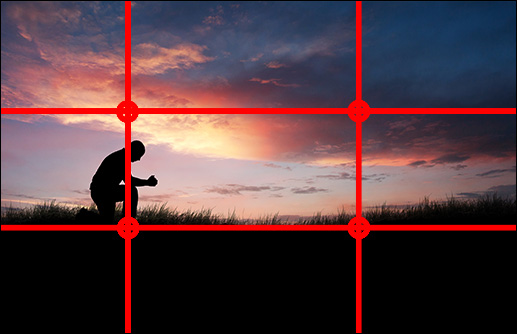
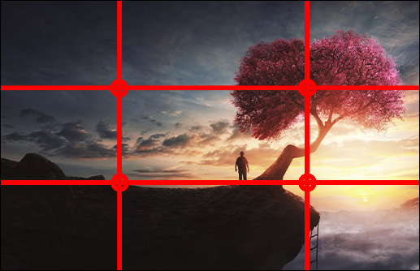

Mango Street:
Part 2
Alphabet &
Pronunciation
What You
Should Know
Before you begin, you should:
- Know how to take notes on a story as you read
- Have already read chapters 11-21 of The House on Mango Street
- Be familiar with the use of similes as literary elements
- Be able to find specific details in reading
- Know how to summarize, infer, paraphrase, and identify relevant details
By the end of this lesson, you should be able to:
- Identify the “Rule of Three" as it relates to film and writing
- Analyze poetic techniques such as structure and simile
- Organize information that integrates appropriate media
Lesson
Expectations
Rule of Three
In photography, the “Rule of Thirds" deals with composition. It allows for a photograph to reveal artistic structure. Before we continue watch these fotos and analyze them, use the following questions to notice the details:
Where are the main points of interest in the picture located in relation to the grid lines of the Rule of thirds?
Is the main subject of the picture placed along one of the grid lines or at an intersection?
Does the placement of elements in the picture draw the viewer's eye towards the main subject or points of interest?
In literature as well as in film, there are also rules of structure that apply the Rule of Three.
The Rule of Three in writing will appear in the following poem you will study as well as in The House on Mango Street.
In previous lessons, you have focused on the big picture — the big ideas — that the writers were getting across. You will continue to do this; however, you will take it a step further by analyzing the structure of what you read. First, let's take a look at how the Rule of Three is used in film.
We can say that the Rule of Three is as simple as a story having a beginning, middle, and end. There are three parts, right? Yes, this is a start at looking at structure. Perhaps some would argue that structure in a novel is not as imperative or complex as it is in a poem. It is true that in a traditional story the structure is as simple as having a beginning, middle, and end.
However, The House on Mango Street, which consists of 44 very short chapters/vignettes, each of them with a structure of its own, can be seen as a non-traditional piece of literature. It's sort of like a jigsaw puzzle; we need to figure out a structure to help make sense of the complete book and to bring all the ideas together.
Structuring Literature
Think about the overall structure of Part 1 (chapters 1-10) of the book, which dealt with innocence. Next you will be analyzing Part 2 (chapters 11-21), which will move into experience.


Lesson Keywords
The Rule of Three is a principle that suggests that things that come in threes are inherently more satisfying, effective, and memorable. This is often used in writing, speaking, and advertising to create a sense of completeness or emphasis.
A simile is a figure of speech that compares two things using the words "like" or "as."
Lesson Keywords
Before you read these poems, "By Accident '' and "The Whitehouse has disinvited poets," let's find out a little more about the author, Julia Alvarez. As you watch the following resumee about Julia Alvarez’s book, a story about Quinceañera (Sweet 15), pay close attention to what she has to say about a writer's duty.
- What does she say writing is about?
- How does Alvarez describe the ways a writer solves problems?
- What type of a writer do you suppose she is?
Poetry of Julia Alvarez
Read the poems "By Accident" and "The Whitehouse has disinvited the poets," by Julia Alvarez. You should be aware that as a writer, she is interested in using literature or poetry as a “lens" revealing the important issues that lie beneath the surface.”
By Accident (Julia Alvarez)
Sometimes I think I became the woman I am by accident, nothing prepared the way, not a dramatic, wayward aunt, or moody mother who read Middlemarch, or godmother who whispered, “You can be whatever you want!” and by doing so performed the god-like function of breathing grit into me. Even my own sisters were more concerned with hairdryers and boys than the poems I recited ad nauseum in our shared bedrooms when the lights were out.
You’re making me sick!” my sisters would say as I ranted on, Whitman’s Song of Myself not the best lullaby, I now admit, or Chaucer in middle English which caused many a nightmare fight. “Mami!” they’d called, “She’s doing it again!” Slap of slippers in the hall, door clicks, and lights snapped on. “Why can’t you be considerate for once?” “I am,” I pleaded, “these are sounds, sweet airs …They give delight and–” “Keep it to yourself!” my mother said, which more than anything anyone in my childhood advised turned me to this paper solitude where I both keep things secret and broadcast my heart for all the world to read. And so, through many drafts, I became the woman I kept to myself as I lay awake in that dark bedroom with the lonesome sound of their soft breathing as my sisters slept. — 12 years ago
The White House Has Disinvited The Poets
by Julia Alvarez.
The White House has disinvited the poets to a cultural tea in honor of poetry after the Secret Service got wind of a plot to fill Mrs. Bush’s ears with anti-war verse. Were they afraid the poets might persuade a sensitive girl who always loved to read, a librarian who stocked the shelves with Poe and Dickinson? Or was she herself afraid to be swayed by the cooing doves, and live at odds with the screaming hawks in her family?
The Latina maids are putting away the cups and the silver spoons, sad to be missing out on música they seldom get to hear in the hallowed halls… The valet sighs as he rolls the carpets up and dusts the blinds. Damn but a little Langston would be good in this dreary mausoleum of a place! Why does the White House have to be so white? The chef from Baton Rouge is starved for verse uncensored by Homeland Security.
NO POETRY UNTIL FURTHER NOTICE!
This poem was taken from: https://ninalachapelle.tumblr.com/post/1157248807/by-accident-julia-alvarez
This poem was taken from: https://reclaimingthelatinatag.tumblr.com/post/42510759073/the-white-house-has-disinvited-the-poets-to-a
Assignment 1
Choose the correct answer
Read the following sentences carefully and answer whether or not they contain a simile.
-
The cat's fur was as soft as silk
A) Yes, there is a simile in this sentence.B) No, there is no simile in this sentence.
-
She sings like an angel - simile
A) Yes, there is a simile in this sentence.B) No, there is no simile in this sentence.
-
He runs faster than a cheetah
A) Yes, there is a simile in this sentence.B) No, there is no simile in this sentence.
-
Her laughter is like music to my ears
A) Yes, there is a simile in this sentence.B) No, there is no simile in this sentence.
-
The sky was a deep shade of blue, like the ocean
A) Yes, there is a simile in this sentence.B) No, there is no simile in this sentence.
-
He's as smart as a fox
A) Yes, there is a simile in this sentence.B) No, there is no simile in this sentence.
-
She was as quiet as she could
A) Yes, there is a simile in this sentence.B) No, there is no simile in this sentence.
-
He's stronger than an ox
A) Yes, there is a simile in this sentence.B) No, there is no simile in this sentence.
-
The flowers were brighter than the sun
A) Yes, there is a simile in this sentence.B) No, there is no simile in this sentence.
-
She was as graceful as a dancer
A) Yes, there is a simile in this sentence.B) No, there is no simile in this sentence.
|
Answer the following questions.
|